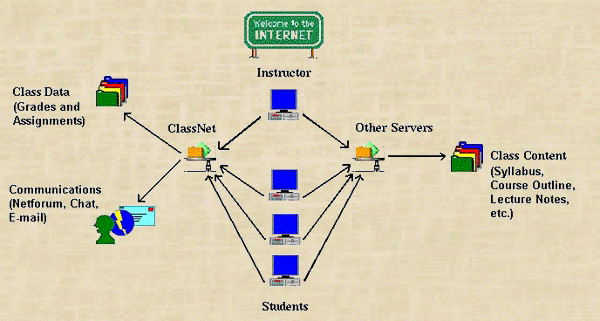

|
|

The process begins when an instructor accesses ClassNet at: http://classnet.geol.iastate.edu/ and creates a class. Once the class is ready, students may enroll. (Please note: Enrolling with the ClassNet system is a separate process from registering with the governing institution.)
Upon enrolling, students
may:
--Complete tests and assignments
--View grades
--Communicate with classmates and the instructor
Instructors may access ClassNet to create tests, update class information, change student passwords, and communicate with students. Tests may contain multiple-choice, short-answer and essay questions. Grading is automated and occurs after the due date assigned to the test. If no due date is provided, tests will be graded immediately upon submission. Answers to essay questions are e-mailed to the instructor. While student grades are stored on the ClassNet server, course content is stored on the instructor's Web site, and is accessed by students through URLs provided by the instructor. Links in the class content can route students directly to the ClassNet Main Menu for assignments and testing.
If you are an instructor, click on Create on the ClassNet Main Menu and supply the requested information. This information will be sent to the ClassNet administrators for completion, which will occur within one working day. Once you receive confirmation via e-mail, your class will be listed with the available classes on the ClassNet Main Menu, and you can login and begin to make assignments.
Students may enroll in the class by locating and selecting the class name and then clicking on Enroll at the Main Menu. You may configure your class so that all enrollment requests require your approval for processing, or you may allow students to enroll and automatically be added to the class. If you chose the Approve option for your class, an Approve button will appear on your Membership Menu when there students are waiting for approval. You may also manually add and delete students from the class.
ClassNet is designed to support a
number of assignment types, including:
To create and manage assignments, select the Assignment button on the
Instructor Menu. Your existing assignments will be listed. To add an assignment,
click on Add in the Assignment Menu and enter the name of the assignment
and its type and click on Add. The assignment will be added to a development
area not accessible to students. Edit the assignment as necessary, and
Publish when it is ready for student use. The assignment cannot be viewed
by students until it has been published.
Try the sample class and see how ClassNet works for both the instructor and student. Don't be afraid to try all the options. You will be protected from making any changes which would affect the Sample Class.
Class: Sample Class
Instructor:instructor@iastate.edu
Password: sample
Student:student@iastate.edu
Password: sample
Select Sample Class from the Main Menu and choose either the instructor or student username. As a student, try Forecasting the Weather. As an instructor, try editing that assignment.
Click on Back in your browser to return to the Main Menu.